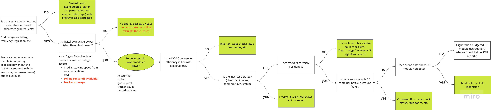

Welcome
Welcome to Proximal Energy's documentation website. This website is intended to provide a comprehensive guide to the various aspects of Proximal Energy's software. The website is divided into several sections, each of which is designed to provide a detailed explanation of a specific aspect of each of the main functionalities of the platform.
Hints
- You can press the left and right arrow keys on your keyboard to navigate to the previous and next page respectively.
Introduction
Data Connection
Project Taxonomy
Geographic Information
Project Documents
Maintenance Ticketing Integration (optional)
Event Root Causes
Spare Parts Management Integration (optional)
Events
Events are technical issues occurring within the plant, triggered by factors such as underperformance, outages, or data communication problems. Each event is directly linked to a specific asset ID of a certain device type (e.g., inverter, combiner box, tracker, MV transformer) for precise identification and tracking.
Events may or may not lead to energy and revenue losses due to several considerations (read here)
Event Stages
Events on the platform go through defined stages to ensure structured identification, analysis, and resolution. Each stage has a specific purpose and timestamp for tracking progress. Here’s an overview of each stage:
Start Initial detection of a potential issue related to an asset, timestamped to mark the beginning of the event lifecycle.
Detected The system confirms the presence of an issue by comparing data against preset thresholds or rules.
Analyzed The platform conducts a deeper analysis to understand the root cause, classify the type of event (e.g., underperformance, outage), and assess potential impacts on energy and revenue.
Recommendation Based on the analysis, a recommendation is generated for corrective action or mitigation, such as dispatching maintenance or adjusting operating parameters.
Ticketed A service ticket is created to address the issue. This stage involves notifying relevant personnel, assigning responsibilities, and scheduling repairs if necessary.
Fixed The issue has been resolved, and the system or asset returns to optimal performance. The event is marked as completed, and a final timestamp is recorded.
In theory, the sum of all power losses from active events should make up the difference between expected and actual power.
Some Examples:
An inverter shuts down due to a DC ground fault,
Events
Events are technical issues occurring within the plant, triggered by factors such as underperformance, outages, or data communication problems. Each event is directly linked to a specific asset ID of a certain device type (e.g., inverter, combiner box, tracker, MV transformer) for precise identification and tracking.
Events may or may not lead to energy and revenue losses due to several considerations (read here)
Event Stages
Events on the platform go through defined stages to ensure structured identification, analysis, and resolution. Each stage has a specific purpose and timestamp for tracking progress. Here’s an overview of each stage:
Start Initial detection of a potential issue related to an asset, timestamped to mark the beginning of the event lifecycle.
Detected The system confirms the presence of an issue by comparing data against preset thresholds or rules.
Analyzed The platform conducts a deeper analysis to understand the root cause, classify the type of event (e.g., underperformance, outage), and assess potential impacts on energy and revenue.
Recommendation Based on the analysis, a recommendation is generated for corrective action or mitigation, such as dispatching maintenance or adjusting operating parameters.
Ticketed A service ticket is created to address the issue. This stage involves notifying relevant personnel, assigning responsibilities, and scheduling repairs if necessary.
Fixed The issue has been resolved, and the system or asset returns to optimal performance. The event is marked as completed, and a final timestamp is recorded.
In theory, the sum of all power losses from active events should make up the difference between expected and actual power.
Some Examples:
An inverter shuts down due to a DC ground fault,
Events
Events are technical issues occurring within the plant, triggered by factors such as underperformance, outages, or data communication problems. Each event is directly linked to a specific asset ID of a certain device type (e.g., inverter, combiner box, tracker, MV transformer) for precise identification and tracking.
Events may or may not lead to energy and revenue losses due to several considerations (read here)
Event Stages
Events on the platform go through defined stages to ensure structured identification, analysis, and resolution. Each stage has a specific purpose and timestamp for tracking progress. Here’s an overview of each stage:
Start Initial detection of a potential issue related to an asset, timestamped to mark the beginning of the event lifecycle.
Detected The system confirms the presence of an issue by comparing data against preset thresholds or rules.
Analyzed The platform conducts a deeper analysis to understand the root cause, classify the type of event (e.g., underperformance, outage), and assess potential impacts on energy and revenue.
Recommendation Based on the analysis, a recommendation is generated for corrective action or mitigation, such as dispatching maintenance or adjusting operating parameters.
Ticketed A service ticket is created to address the issue. This stage involves notifying relevant personnel, assigning responsibilities, and scheduling repairs if necessary.
Fixed The issue has been resolved, and the system or asset returns to optimal performance. The event is marked as completed, and a final timestamp is recorded.
In theory, the sum of all power losses from active events should make up the difference between expected and actual power.
Some Examples:
An inverter shuts down due to a DC ground fault,
Event Management
Events within a solar plant can occur at various levels of the system and often require careful analysis to determine their root cause. While an event may be initially detected at one component, the actual source of the issue could originate elsewhere in the system.
For example, an inverter may report a fault or performance issue, but the underlying cause could be:
- A problem in the DC combiner box (e.g., blown fuse, faulty connection)
- Issues in the DC field (e.g., damaged panels, soiling, shading)
Similarly, a full outage of an inverter may be detected, but in fact, the parent asset (MV transformer) in this case failed, so the inverter event should get assigned to the MVT event.
Proper event management involves:
- Detection of failures in the plant (failure modes)
- Analysis of failure modes and determining possible groupings
- Root cause determination
- Analysis of energy/revenue loss
- Documentation and tracking for future reference
This systematic approach helps ensure that issues are properly diagnosed and resolved, rather than just treating the symptoms where they are first detected.
Here's how it works in the system:
System Components and Workflow
The event management system consists of several key Python scripts that work together:
Core Scripts
manage_events.py- Master script coordinating the workflowcreate_flags.py- Identifies offline devices based on power output and irradianceidentify_events.py- Processes flag data to determine actual eventsloss_accounter.py- Calculates energy and revenue lossesmax_tracking_loss.py- Handles tracker-specific loss calculationscreate_ppa_series.py- Generates PPA pricing data
Process Flow
1. Event Detection (manage_events.py)
The master script runs on three different schedules:
- Case 0: Daily 3-day lookback (9:00 UTC)
- Case 1: 6-hourly 1-day lookback
- Case 2: 15-minute 1-hour lookback (no energy loss calculations)
The script:
- Checks for ongoing processes using filelock
- Retrieves existing events in the analysis window
- Creates flags via
create_flags.py - Identifies events via
identify_events.py - Accounts for losses via
loss_accounter.py(except Case 2) - Updates database and notifies subscribers of new events
2. Flag Creation (create_flags.py)
Determines when devices are "offline" by:
- Setting thresholds (POA at 150 W/m², offline at 1.5% of max power)
- Processing sensor data (meter power, inverter power, combiner current, etc.)
- Creating boolean timeseries marking offline periods
- Handling existing events and irradiance conditions
3. Event Identification (identify_events.py)
Processes flag data to:
- Create device hierarchy
- Detect event starts/ends
- Handle overlapping events
- Manage parent-child event relationships
- Remove redundant events
4. Loss Calculation (loss_accounter.py)
Calculates losses by:
- Retrieving expected power values
- Processing events hierarchically (meter → inverter → modules → combiners)
- Accounting for parent-child relationships
- Calculating tracking losses separately
- Applying POI limits and PPA pricing
5. Tracking Loss Calculation (max_tracking_loss.py)
Specialized calculations for tracker-related losses:
- Processes weather and position data
- Calculates theoretical optimal output
- Determines losses from non-optimal tracking
Future Enhancements
Planned improvements include:
- Adding fault code correlation for root cause detection
- Incorporating underperformance events
- Enhancing tracking loss calculations
- Implementing actual PPA data integration
Event Detection
Losses Calculation and Allocation
Energy and financial losses from events are calculated through a systematic process that accounts for overlapping issues and properly allocates losses to the appropriate root causes. The system follows a hierarchical approach to ensure accurate attribution of losses.
Loss Calculation Process
When calculating losses for overlapping events, the system follows these key principles:
- Hierarchical Attribution: Losses are attributed to the lowest level component in the hierarchy that is experiencing an issue
- Temporal Segmentation: Time periods are split into segments where different combinations of events are active
- Parent-Child Relationships: Events at higher levels (e.g., MV transformer) take precedence over downstream events during overlapping periods
Example Scenario
Consider a situation where:
- A tracker is non-functional for 48 hours (parent event)
- During those 48 hours, an inverter downstream of that tracker fails for 6 hours (parent event)
The loss attribution would be:
- The inverter event gets 100% of losses during its 6-hour period
- The tracker event gets attributed losses for the remaining 42 hours
- No double-counting occurs during the overlap
Systematic Diagnosis Flow
The following flowchart illustrates how the system diagnoses and categorizes performance issues to properly attribute losses:

- Is Plant Active Power Output Lower Than Setpoint?
This initial question checks if the plant's output falls below its expected or setpoint level. If the output is lower due to external grid requests (such as curtailment or regulation), this is logged as a curtailment event, potentially impacting energy calculations if uncompensated.
- Check for Digital Twin Discrepancies
If the plant’s active power is lower than expected, the system next compares it to a "Digital Twin" simulated power output. The digital twin uses inputs such as irradiance, wind speed, and temperature to model expected power, accounting for real-time environmental factors. If the digital twin output is higher, it may indicate an issue within the plant rather than external factors.
- Inverter-Level Analysis
If discrepancies persist, the system checks each inverter’s modeled power output. Specific questions then address whether the DC-to-AC conversion efficiency is consistent with expectations and whether the inverter itself shows signs of degradation (through fault codes, elevated temperatures, or status indicators). Any issues here are logged as "Inverter Issues," requiring further inspection.
- Tracker Positioning and Performance
The flow checks if solar trackers are correctly positioned, as improper positioning could reduce efficiency. Any misalignment could indicate tracker issues, potentially logged based on fault codes or positioning errors.
- Combiner Box and Module-Level Checks
The next step inspects the combiner box for faults, ground faults, or other connection issues, as faults here would impact the entire string connected to the box. The flow also checks drone data to identify DC module hotspots, which are indications of module-level performance issues.
- Module Degradation
If module hotspots or degradation are detected, further investigation is required to determine if degradation rates exceed budgeted expectations, suggesting a need for replacement or maintenance.
- DC or AC Overbuild: Instances where system design allows for performance variations without impacting overall energy output.
- POI Curtailment: Situations where output restrictions at the point of interconnection reduce energy production, independent of asset condition.
- Communication Issues without Operational Impact: Occurrences where data transfer is disrupted, but the asset continues functioning as expected.
- Superseding Parent Event: Certain events are grouped under a larger parent event to streamline reporting and focus on primary issues.
KPI Overview
Industry Benchmark KPIs
Contract KPIs
PV Model Overview
Why Proximal
The Proximal PV performance model has been specifically designed with asset management in mind. This means that:
- The model is sub-hourly which corresponds with the high frequency data that comes from operating assets.
- The model is nodal which allows users to see the expected energy of different nodes in the system including at the combiner, the inverter, and the substation. It also means that there is finally a model which allocates met station data geo-spatially to the closest node in the system. This can be a great improvement for real time systems with passing clouds.
- The model is based on pvlib which means that it is modern, tested, open-source, trusted by the community, and extendable. If there is a model you would like us to use in the proximal PV performance model, all you need to do is submit a pull request to pvlib.
- The model is documented which means that you can see exactly what is being calculated and how.
- The model is focused on Root Mean Squared Error (RMSE) as well as the Mean Squared Error (MSE). While most PV models in development focus only on MBE, RMSE can be a better metric for models which operate on a real time basis.